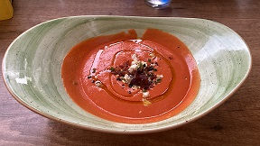
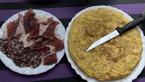
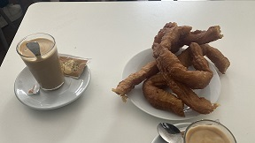

Muy famosas en la Cuadrilla de Mendialdea, las cuales son atractivo turístico en las fiestas de Bujanda:
| Receta |
Foto de galería |
Descripción |
| Gazpacho con pan de hogaza de Maestu
|  |
El gazpacho es una deliciosa sopa fría que se caracteriza por su frescura y sabor. Esta receta tradicionalmente andaluza la hemos adaptado a los productos kilómetro 0 de la Cuadrilla de Mendialdea, entre los que prima el delicioso pan artesanal de Maestu. |
| Tortilla de patata alavesa
|  |
La tortilla prepararada por J.K. fue la ganadora en la semifinal alavesa del Campeonato de Euskadi de Tortilla de Patata. El secreto a voces: la mejor patata alavesa proveniente de los campos circundantes a Bujanda y los huevos de gallinas camperas que viven en un entorno libre y seguro. |
| Porras de San Fausto
|  |
Receta tradicional del pueblo por el que se acercan vecinos de todo Mendialdea por su sabor. ¡Están deliciosas! Se preparan el día de San Fausto y es toda una fiesta. |
Y recetas más, pero que son secreto de autor de nuestros "Elkarkide". ¿Alguna vez nos lo contarán? jeje.